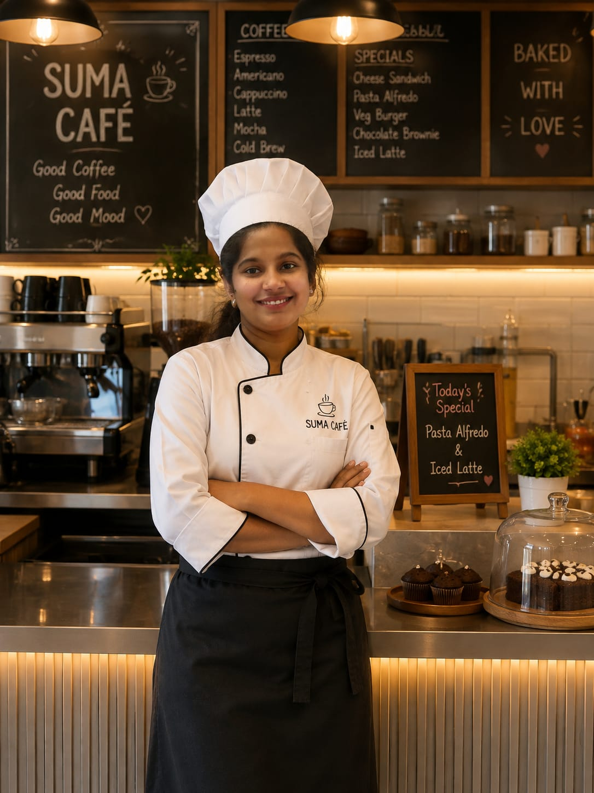
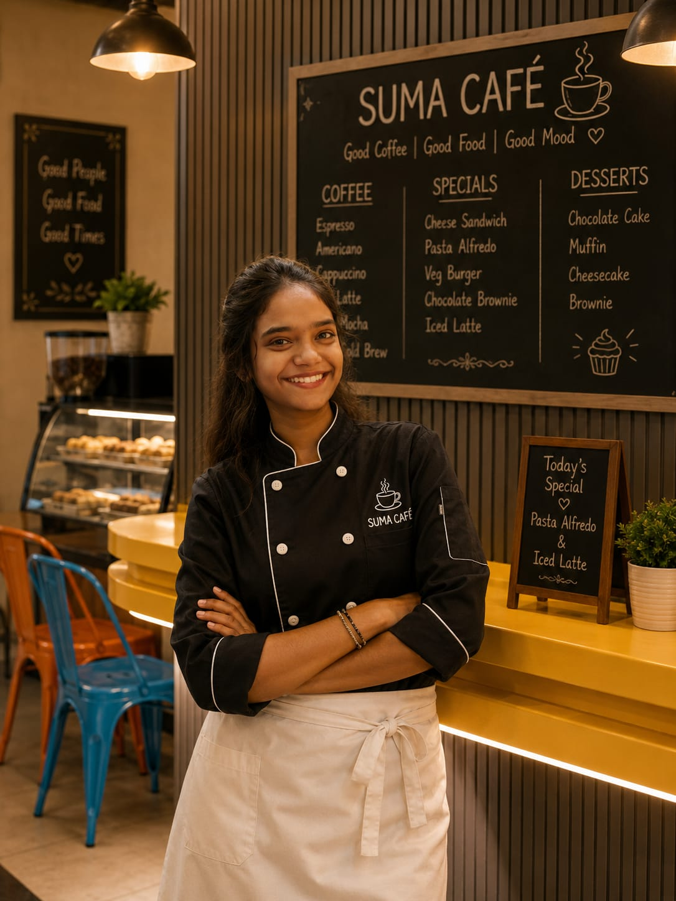
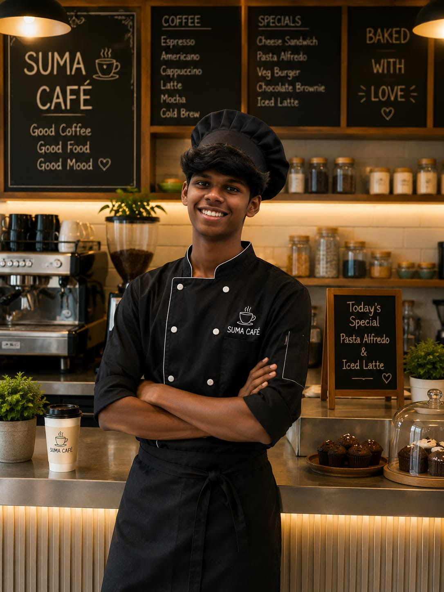
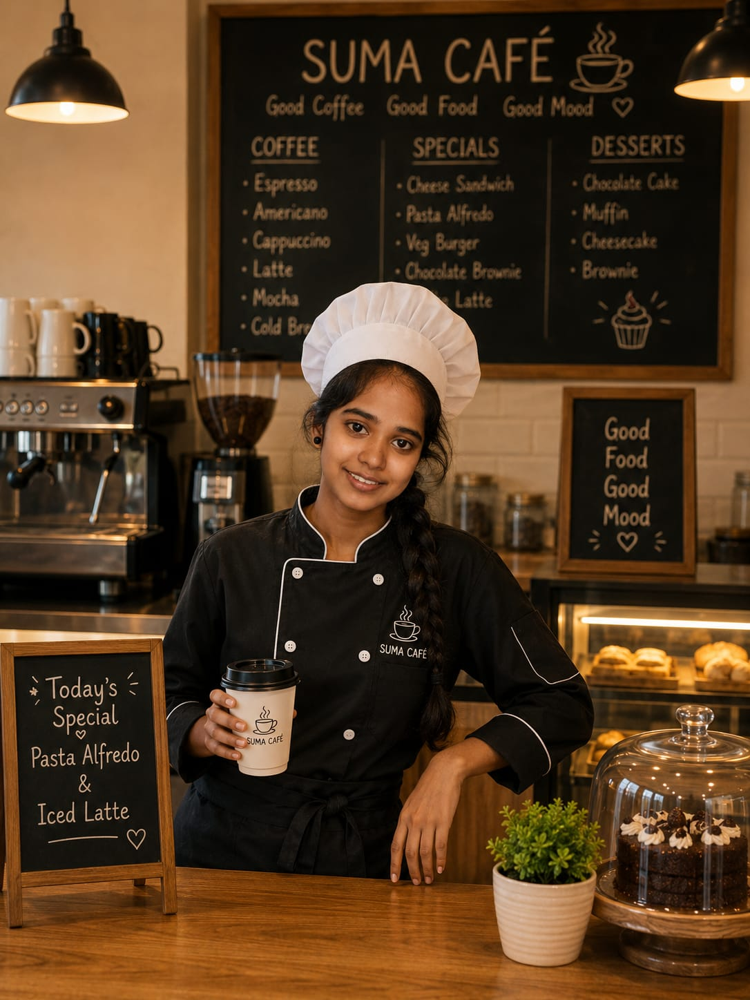

VINTAGE BAKES
OUR BAKING TEAM
Behind every beautiful cake and every freshly baked loaf is a team that believes baking is both an art and a science. Our bakers combine traditional techniques, creativity and attention to detail to bring something special to your table.

HEAD BAKER & FOUNDER
The heart behind Suma's Vintage Bakes, Suma brings a love for traditional recipes and creative pastry design into every creation.
Her speciality is designing elegant celebration cakes and bringing classic flavours back to life.

PASTRY CHEF
Rupa specializes in delicate pastries, croissants, Danish pastries and other European-inspired treats.
Her attention to texture and presentation makes every pastry look as beautiful as it tastes.

ARTISAN BREAD SPECIALIST
SUJITH is passionate about traditional bread-making and slow fermentation.
From rustic sourdough to soft milk bread, he focuses on developing rich flavours using traditional baking methods.

CAKE DECORATION ARTIST
Rachel transforms cakes into elegant works of art with her detailed decoration techniques.
She specializes in floral designs, vintage piping and customized celebration cakes.
OUR BAKING PHILOSOPHY
Every creation begins with a new idea and a little imagination.
We put care and enthusiasm into everything that leaves our oven.
We respect classic baking methods while creating something new.